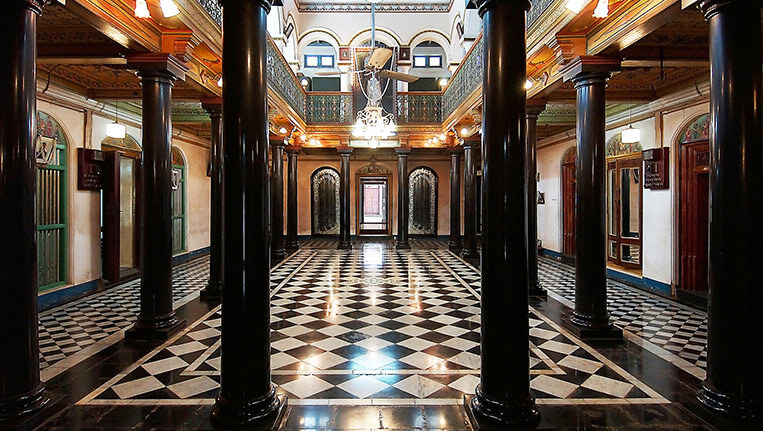

BEST ROYAL PLACES TO VISIT IN INDIA
India has a rich history which is marked by the rule of illustrious dynasties, empires and kingdoms. The palaces that are located in different parts of India today are reminders of that glorious past. Their aesthetics, proportions and artwork, everything about them is visually striking. While some of the palaces have been converted into grand heritage hotels, others have been converted into museums.
Here we bring you a list of the best 20 royal palaces in India you must visit.

1.City Palace, Udaipur, Rajasthan
2.Jai Vilas Palace, Gwalior, Madhya Pradesh

3.Laxmi Vilas Palace, Vadodara, Gujarat

4.Prag Mahal, Bhuj, Gujarat

5.Umaid Bhawan Palace, Jodhpur, Rajasthan
6.Amba Vilas Palace, Mysore, Karnataka

7.Jal Mahal, Jaipur, Rajasthan
8.Hawa Mahal

9.Patwon Ki Haveli, Jaisalmer, Rajasthan

10.Lake Palace, Udaipur, Rajasthan

11.Ujjayanta Palace, Agartala, Tripura

12.Taj Falaknuma Palace, Hyderabad, Telangana
13.Bangalore Palace, Bangalore, Karnataka
14.City Palace, Jaipur, Rajasthan

15.Chettinad Palace, Sivaganga district, Tamil Nadu

16.Chowmahalla Palace, Hyderabad, Telangana
17.Amber Fort, Jaipur, Rajasthan

18.Tipu Sultan’s Summer Palace, Bangalore, Karnataka

19.Ramnagar Fort and Palace, Varanasi, Uttar Pradesh
20.Monsoon Palace, Udaipur, Rajasthan